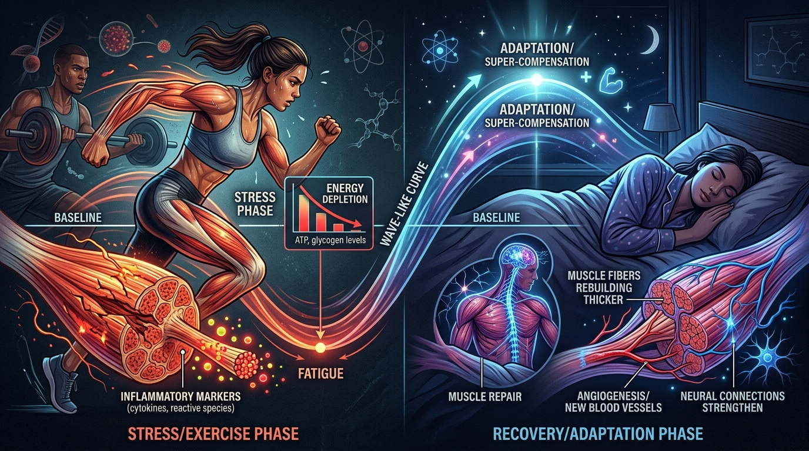
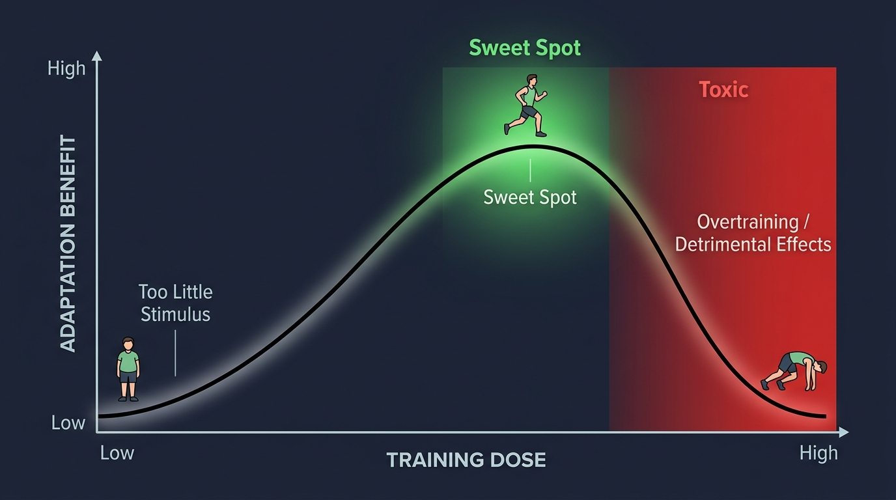
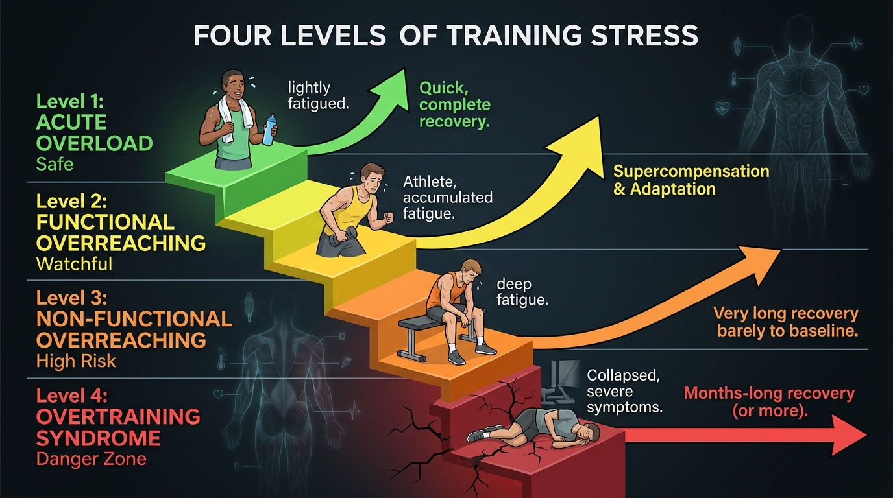
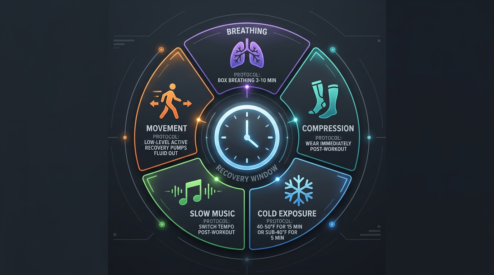

You don't get fitter during the workout. You get fitter during recovery.

Like neuroplasticity — where the stimulus triggers change but rewiring happens during sleep and rest — exercise creates the stress that signals the body to adapt. But the actual building happens during recovery: muscle repair, neural rewiring, cardiovascular remodeling, mitochondrial biogenesis.
The fundamental equation:
"Stress → recovery outpaces stress input → adaptation. If recovery doesn't exceed stress, you don't adapt. You move backwards." — Dr. Andy Galpin
Hormesis: exercise is a controlled poison

Exercise is a hormetic stressor — a small dose triggers beneficial adaptation, but too much becomes toxic. Every workout causes inflammation, oxidative stress, and micro-damage. In the right dose, your body overcompensates by rebuilding stronger. In excessive doses, the damage outpaces repair.
Maximizing immediate recovery can block long-term adaptation
Ice baths, anti-inflammatories (NSAIDs), and high-dose antioxidants (vitamin C & E) can all reduce soreness — but they may also blunt the inflammatory signals that trigger hypertrophy and strength gains. Use acute recovery tools when competing soon. Avoid them during off-season building phases.
Four levels of training stress: most people aren't overtrained

Acute Overload
Normal post-workout fatigue. This is the desired hormetic stimulus. You feel tired after a session — that's the plan.
Functional Overreaching ★
The golden target. Accumulated overloads lead to temporary performance drop, followed by super-compensation ABOVE your previous baseline. This is when tapering/deloading produces breakthroughs.
Non-Functional Overreaching
You pushed through functional overreaching without resting. Performance declines for weeks, returning only to baseline — no super-compensation. Most people who think they're "overtrained" are actually here.
True Overtraining Syndrome
Rare. Requires months to recover. A 3-4 day break fixes Level 3; if rest doesn't help, this is Level 4. Most recreational exercisers will never reach this.
The practical test: if your performance drops for 1-2 days, that's normal Level 1-2. If it drops for 5+ consecutive days, you've entered Level 3 territory and need to back off. In competition season, even 2+ days of decline warrants attention.
What muscle soreness actually is (it's not what you think)
DOMS (Delayed Onset Muscle Soreness) isn't direct muscle fiber damage sending pain signals. The mechanism is more nuanced:
Swelling creates pressure on nerve endings
Exercise causes fluid accumulation in muscle tissue. This fluid puts pressure on muscle spindle nerve endings (gamma motor neurons), which send pain signals to the brain. The pain receptors (nociceptors) aren't in the muscle belly itself — they respond to pressure from swelling.
Why rubbing sore muscles helps (gate theory)
Touch and pressure activate mechanoreceptors that inhibit pain signals at the spinal cord level. This is why massage, compression, and light movement all reduce soreness — they activate competing nerve signals that "close the gate" on pain.
Light movement is the best acute remedy
Low-level movement pumps fluid out of the tissue, directly reducing the pressure on nerve endings. This is why walking, easy cycling, or gentle stretching the day after a hard session reduces soreness more effectively than rest.
Post-workout recovery protocols

Down-regulation breathing
3-10 min post-workout. Lie down, eyes covered, quiet. Box breathing (inhale-hold-exhale-hold) or cyclic sighing (2 inhales + extended exhale). Duration per side calibrated to your CO2 tolerance: <20s exhale = 2-3s sides; 20-45s = 4-6s; >60s = 7-12s.
Compression gear
Wear immediately after training. Tight leggings, compression shirts, socks. Prevents fluid accumulation that causes soreness. Also effective during cross-country flights to prevent blood coagulation issues.
Cold water immersion
Two protocols: Moderately cold (40-50°F) for 15+ minutes, OR very cold (<40°F) for ~5 minutes. Should be uncomfortably cold. Trade-off: may blunt hypertrophy — use for competitions, avoid during building phases.
Music tempo shift
Switch to slow music post-workout. Fast-paced music during training increases arousal and performance. Shifting to slow tempo helps initiate parasympathetic (recovery) state. Simple, free, immediate.
Active recovery (light movement)
Walk, easy cycling, gentle stretching. Pumps fluid out of swollen tissue, directly reducing pressure on nerve endings. Best single tool for acute soreness. Movement beats rest.
Massage & pneumatic compression
Compression boots, manual massage, foam rolling. All work via the same mechanism: moving fluid in/out of tissue, enhancing blood flow, clearing waste. Choose based on budget and access.
Research highlight: A study found that just 5 minutes of box breathing or cyclic sighing post-workout produces significant decreases in resting heart rate and increases in heart rate variability. Extended exhales are the key driver.
Three markers to watch — all must align
Before concluding you're overreaching, check all three categories. Single-marker decisions lead to false alarms.
Biomarkers are the most reliable because they can't be manipulated by motivation. You can will yourself through a workout (masking a performance drop), but you can't fake your resting heart rate or HRV.
Timeline rule: 1 day of performance drop = normal. 2 days = still fine. 5+ consecutive days = investigate. During competition season, even 2+ days warrants a training adjustment.
5 Things to Remember
Adaptation happens during recovery, not during training
The workout breaks things down. Sleep, rest, nutrition, and time build them back stronger. If recovery doesn't outpace stress, you move backwards.
Functional overreaching is the goal — then taper
Accumulate stress intentionally, then deload. The super-compensation that follows is when performance breakthroughs happen. You should NOT feel great every session during an overreach phase.
Recovery tools can block adaptation
Ice baths, NSAIDs, and antioxidant mega-doses reduce soreness but may blunt hypertrophy signals. Use them strategically near competitions — avoid during building phases.
Breathing is the most underrated recovery tool
5 minutes of structured breathing (box breathing or cyclic sighing) post-workout measurably improves HRV and resting heart rate. It's free, immediate, and backed by research.
You're probably not overtrained — you're under-recovered
True overtraining syndrome is rare. Most people are at Level 3 (non-functional overreaching) and need 3-4 days off, not months. Check performance, physiology, AND symptoms before making a diagnosis.
Watch the Full Episode
- The full soreness mechanism — muscle spindles, gamma motor neurons, gate theory of pain, and why DOMS is a neural response, not muscle damage
- Free radicals & inflammation cascades — how mitochondrial electron transport chain produces reactive oxygen species and triggers neutrophil/macrophage repair
- Acute vs long-term recovery trade-offs — when to use ice/anti-inflammatories (competition) vs when to avoid them (building phases), with vitamin C & E data
- Box breathing & CO2 tolerance calibration — the full protocol for post-workout down-regulation, personalized to your CO2 exhale test results
- Cold water immersion protocols — exact temperatures, durations, and the adaptation-blunting trade-off with detailed recommendations
- The three-marker monitoring system — how to track performance, physiology, and symptoms to distinguish functional from non-functional overreaching